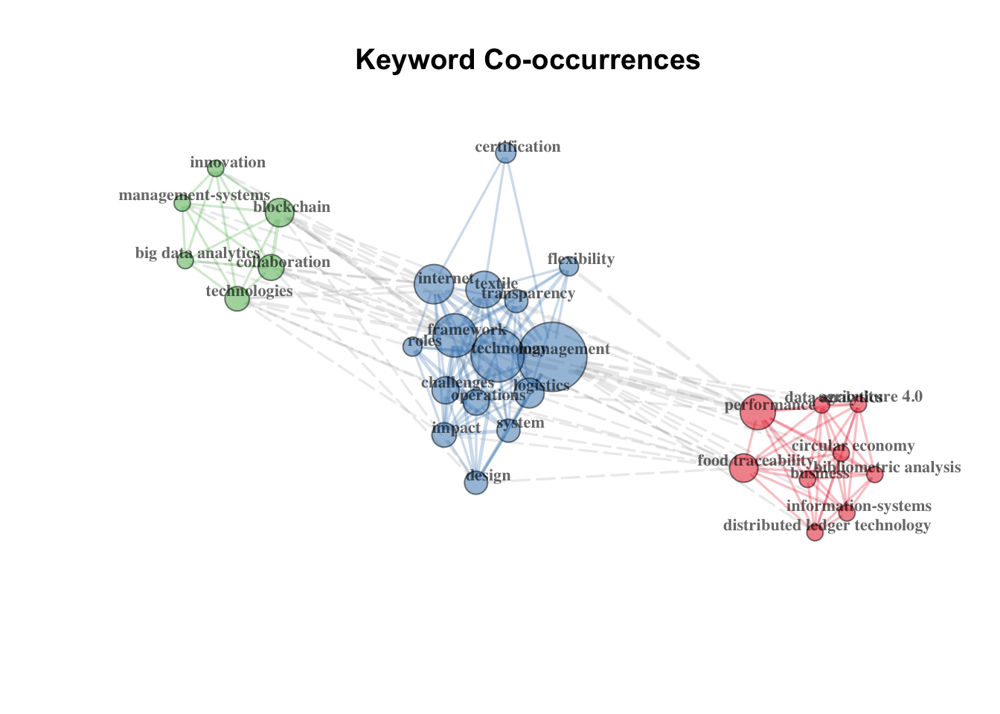
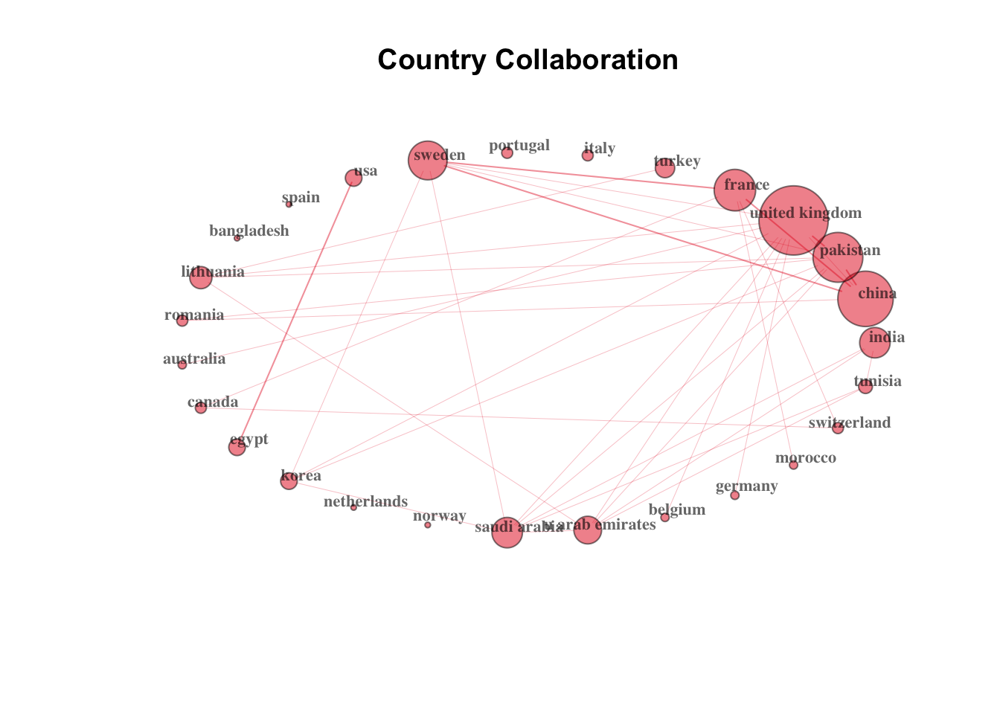
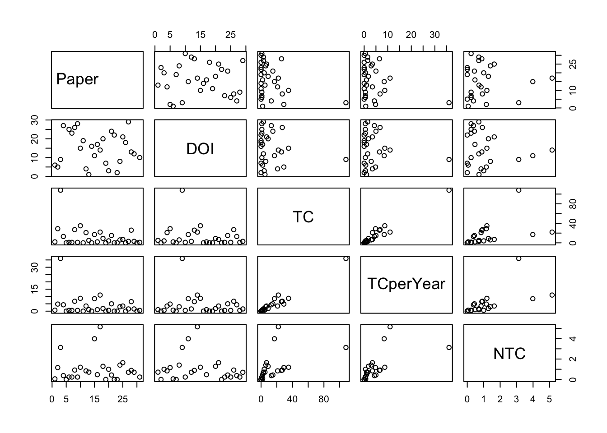
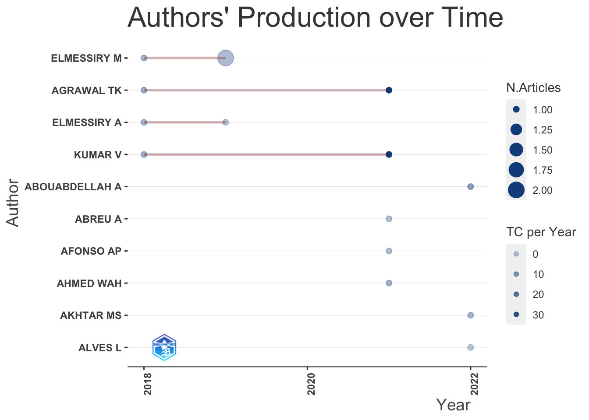
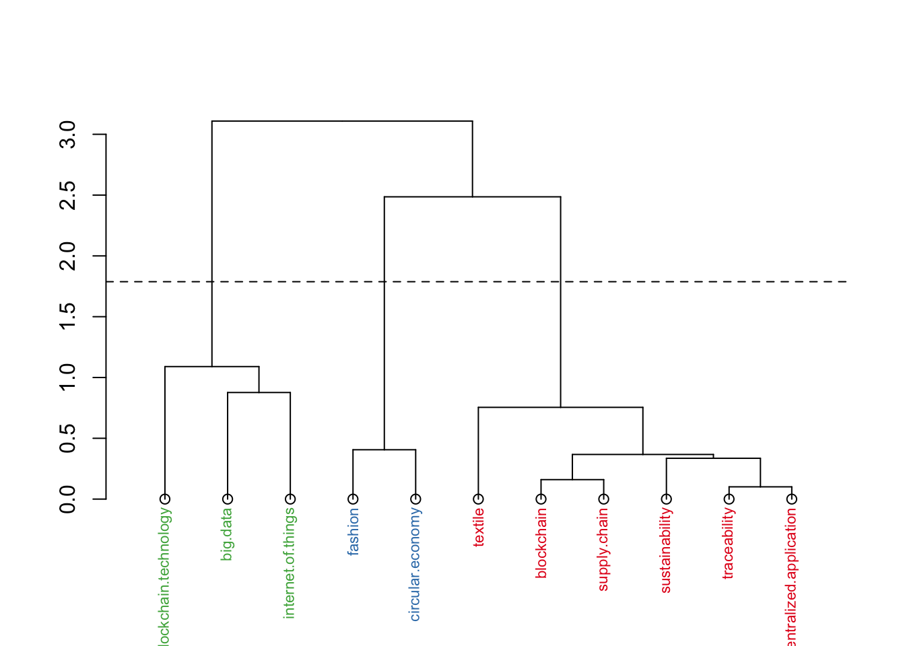
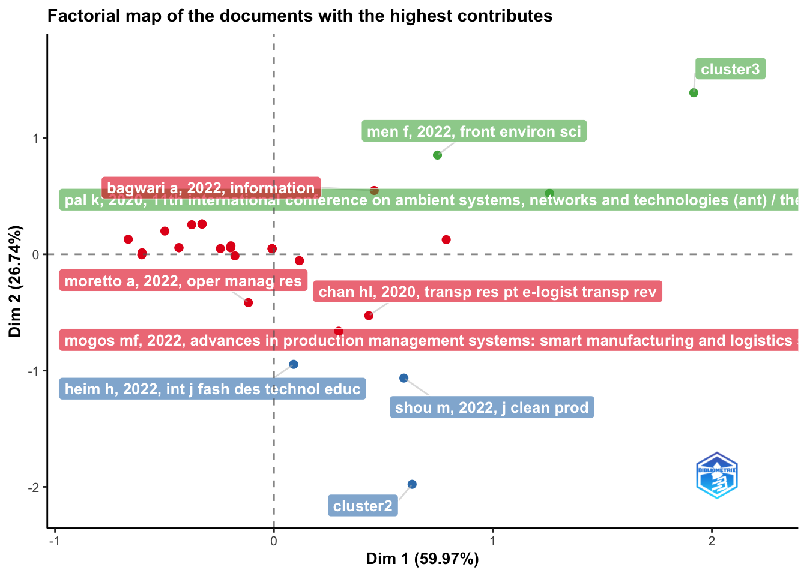
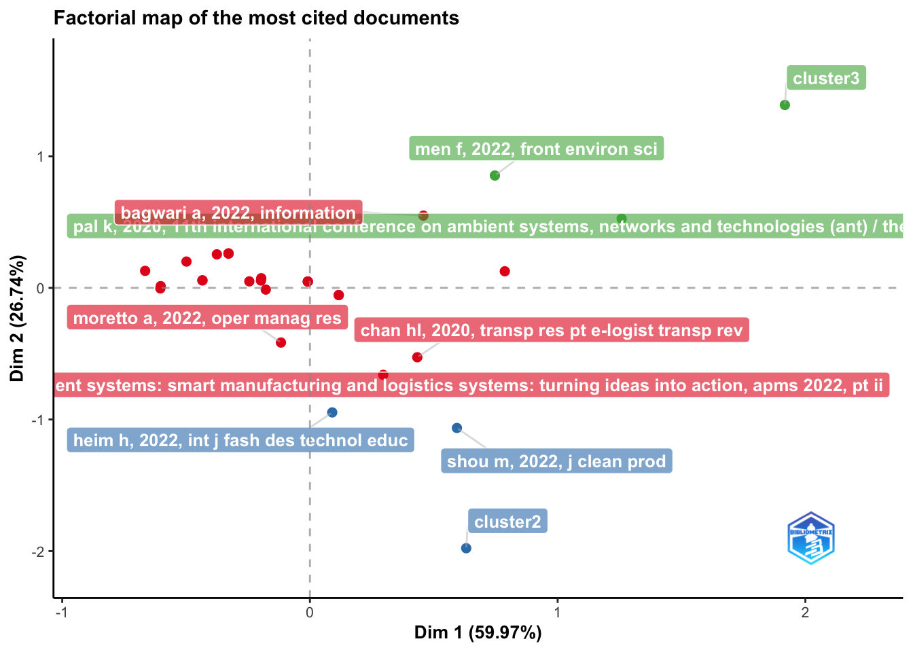

Converting your wos collection into a bibliographic dataframe
Done!
Generating affiliation field tag AU_UN from C1: Done!Blockchain and sustainability reporting
Sample analysis
Results from this link
Clarivate Analytics WoS
Summarize main results of the bibliometric analysis

Countries collaborating on this set of bibliographic data

main bibliometric measures
summarize main results of the bibliometric analysis
MAIN INFORMATION ABOUT DATA
Timespan 2017 : 2023
Sources (Journals, Books, etc) 27
Documents 31
Annual Growth Rate % 25.99
Document Average Age 1.81
Average citations per doc 11.55
Average citations per year per doc 3.603
References 1711
DOCUMENT TYPES
article 19
article; book chapter 2
article; early access 2
proceedings paper 8
DOCUMENT CONTENTS
Keywords Plus (ID) 78
Author's Keywords (DE) 121
AUTHORS
Authors 115
Author Appearances 120
Authors of single-authored docs 0
AUTHORS COLLABORATION
Single-authored docs 0
Documents per Author 0.27
Co-Authors per Doc 3.87
International co-authorships % 51.61
Annual Scientific Production
Year Articles
2017 1
2018 2
2019 2
2020 3
2021 4
2022 15
2023 4
Annual Percentage Growth Rate 25.99
Most Productive Authors
Authors Articles Authors Articles Fractionalized
1 ELMESSIRY M 3 ELMESSIRY M 1.167
2 AGRAWAL TK 2 ELMESSIRY A 0.833
3 ELMESSIRY A 2 AGRAWAL TK 0.533
4 KUMAR V 2 KUMAR V 0.533
5 ABOUABDELLAH A 1 AHMED WAH 0.500
6 ABREU A 1 DEGLI ESPOSTI P 0.500
7 AFONSO AP 1 DOMENECH T 0.500
8 AHMED WAH 1 FRAGAPANE G 0.500
9 AKHTAR MS 1 HEIM H 0.500
10 ALVES L 1 HOPPER C 0.500
Top manuscripts per citations
Paper
1 AGRAWAL TK, 2021, COMPUT IND ENG
2 CHAN HL, 2020, TRANSP RES PT E-LOGIST TRANSP REV
3 AGRAWAL TK, 2018, SPRINGER SERIES IN FASHION BUSINESS
4 BULLON PEREZ JJ, 2020, SUSTAINABILITY
5 PAL K, 2020, 11TH INTERNATIONAL CONFERENCE ON AMBIENT SYSTEMS, NETWORKS AND TECHNOLOGIES (ANT) / THE 3RD INTERNATIONAL CONFERENCE ON EMERGING DATA AND INDUSTRY 4.0 (EDI40) / AFFILIATED WORKSHOPS
6 KUSI-SARPONG S, 2022, TECHNOL FORECAST SOC CHANG
7 ELMESSIRY M, 2018, BLOCKCHAIN - ICBC 2018
8 HADER M, 2022, J IND INF INTEGR
9 MEIDUTE-KAVALIAUSKIENE I, 2021, LOGISTICS
10 AHMED WAH, 2021, SUSTAINABILITY
DOI TC TCperYear NTC
1 10.1016/j.cie.2021.107130 108 36.00 3.130
2 10.1016/j.tre.2020.102063 35 8.75 1.193
3 10.1007/978-981-13-0080-6\\_10 29 4.83 1.160
4 10.3390/su12187491 27 6.75 0.920
5 10.1016/j.procs.2020.03.088 26 6.50 0.886
6 10.1016/j.techfore.2021.121331 22 11.00 5.156
7 10.1007/978-3-319-94478-4\\_15 21 3.50 0.840
8 10.1016/j.jii.2022.100345 17 8.50 3.984
9 10.3390/logistics5020033 15 5.00 0.435
10 10.3390/su131910496 13 4.33 0.377
Corresponding Author's Countries
Country Articles Freq SCP MCP MCP_Ratio
1 UNITED KINGDOM 5 0.1613 1 4 0.80
2 INDIA 4 0.1290 3 1 0.25
3 PAKISTAN 3 0.0968 0 3 1.00
4 FRANCE 2 0.0645 0 2 1.00
5 ITALY 2 0.0645 2 0 0.00
6 PORTUGAL 2 0.0645 2 0 0.00
7 TURKEY 2 0.0645 2 0 0.00
8 USA 2 0.0645 0 2 1.00
9 AUSTRALIA 1 0.0323 0 1 1.00
10 BANGLADESH 1 0.0323 1 0 0.00
SCP: Single Country Publications
MCP: Multiple Country Publications
Total Citations per Country
Country Total Citations Average Article Citations
1 SWEDEN 108 108.00
2 UNITED KINGDOM 97 19.40
3 FRANCE 46 23.00
4 SPAIN 27 27.00
5 USA 26 13.00
6 LITHUANIA 15 15.00
7 ITALY 10 5.00
8 PAKISTAN 10 3.33
9 HONG KONG 9 9.00
10 INDIA 4 1.00
Most Relevant Sources
Sources
1 SUSTAINABILITY
2 LOGISTICS-BASEL
3 11TH INTERNATIONAL CONFERENCE ON AMBIENT SYSTEMS NETWORKS AND TECHNOLOGIES (ANT) / THE 3RD INTERNATIONAL CONFERENCE ON EMERGING DATA AND INDUSTRY 4.0 (EDI40) / AFFILIATED WORKSHOPS
4 2019 20TH INTERNATIONAL CONFERENCE ON MOBILE DATA MANAGEMENT (MDM 2019)
5 2022 17TH IBERIAN CONFERENCE ON INFORMATION SYSTEMS AND TECHNOLOGIES (CISTI)
6 ADVANCES IN PRODUCTION MANAGEMENT SYSTEMS: SMART MANUFACTURING AND LOGISTICS SYSTEMS: TURNING IDEAS INTO ACTION APMS 2022 PT II
7 ADVANCES IN TOURISM TECHNOLOGY AND SYSTEMS VOL 1
8 ARTIFICIAL INTELLIGENCE FOR FASHION INDUSTRY IN THE BIG DATA ERA
9 BLOCKCHAIN - ICBC 2018
10 BLOCKCHAIN - ICBC 2019
Articles
1 4
2 2
3 1
4 1
5 1
6 1
7 1
8 1
9 1
10 1
Most Relevant Keywords
Author Keywords (DE) Articles Keywords-Plus (ID) Articles
1 BLOCKCHAIN 19 MANAGEMENT 8
2 SUPPLY CHAIN 11 TECHNOLOGY 8
3 TRACEABILITY 7 FRAMEWORK 5
4 TEXTILE 6 INTERNET 5
5 SUSTAINABILITY 5 TEXTILE 5
6 FASHION 4 BLOCKCHAIN 4
7 CIRCULAR ECONOMY 3 CHALLENGES 4
8 BIG DATA 2 PERFORMANCE 4
9 BLOCKCHAIN TECHNOLOGY 2 TRANSPARENCY 4
10 DECENTRALIZED APPLICATION 2 IMPACT 3$MainInformation
[1] "\n\nMAIN INFORMATION ABOUT DATA\n\n" "Timespan 2017 : 2023 \n"
[3] "Sources (Journals, Books, etc) 27 \n" "Documents 31 \n"
[5] "Annual Growth Rate % 25.99 \n" "Document Average Age 1.81 \n"
[7] "Average citations per doc 11.55 \n" "Average citations per year per doc 3.603 \n"
[9] "References 1711 \n" "\nDOCUMENT TYPES \n"
[11] "article 19 \n" "article; book chapter 2 \n"
[13] "article; early access 2 \n" "proceedings paper 8 \n"
[15] "\nDOCUMENT CONTENTS\n" "Keywords Plus (ID) 78 \n"
[17] "Author's Keywords (DE) 121 \n" "\nAUTHORS\n"
[19] "Authors 115 \n" "Author Appearances 120 \n"
[21] "Authors of single-authored docs 0 \n" "\nAUTHORS COLLABORATION\n"
[23] "Single-authored docs 0 \n" "Documents per Author 0.27 \n"
[25] "Co-Authors per Doc 3.87 \n" "International co-authorships % 51.61 \n"
[27] "\n"
$MainInformationDF
Description Results
1 MAIN INFORMATION ABOUT DATA
2 Timespan 2017:2023
3 Sources (Journals, Books, etc) 27
4 Documents 31
5 Annual Growth Rate % 25.99
6 Document Average Age 1.81
7 Average citations per doc 11.55
8 Average citations per year per doc 3.603
9 References 1711
10 DOCUMENT TYPES
11 article 19
12 article; book chapter 2
13 article; early access 2
14 proceedings paper 8
15 DOCUMENT CONTENTS
16 Keywords Plus (ID) 78
17 Author's Keywords (DE) 121
18 AUTHORS
19 Authors 115
20 Author Appearances 120
21 Authors of single-authored docs 0
22 AUTHORS COLLABORATION
23 Single-authored docs 0
24 Documents per Author 0.27
25 Co-Authors per Doc 3.87
26 International co-authorships % 51.61
27
$AnnualProduction
Year Articles
1 2017 1
2 2018 2
3 2019 2
4 2020 3
5 2021 4
6 2022 15
7 2023 4
$AnnualGrowthRate
[1] 25.99
$MostProdAuthors
Authors Articles Authors Articles Fractionalized
1 ELMESSIRY M 3 ELMESSIRY M 1.167
2 AGRAWAL TK 2 ELMESSIRY A 0.833
3 ELMESSIRY A 2 AGRAWAL TK 0.533
4 KUMAR V 2 KUMAR V 0.533
5 ABOUABDELLAH A 1 AHMED WAH 0.500
6 ABREU A 1 DEGLI ESPOSTI P 0.500
7 AFONSO AP 1 DOMENECH T 0.500
8 AHMED WAH 1 FRAGAPANE G 0.500
9 AKHTAR MS 1 HEIM H 0.500
10 ALVES L 1 HOPPER C 0.500
$MostCitedPapers
Paper
1 AGRAWAL TK, 2021, COMPUT IND ENG
2 CHAN HL, 2020, TRANSP RES PT E-LOGIST TRANSP REV
3 AGRAWAL TK, 2018, SPRINGER SERIES IN FASHION BUSINESS
4 BULLON PEREZ JJ, 2020, SUSTAINABILITY
5 PAL K, 2020, 11TH INTERNATIONAL CONFERENCE ON AMBIENT SYSTEMS, NETWORKS AND TECHNOLOGIES (ANT) / THE 3RD INTERNATIONAL CONFERENCE ON EMERGING DATA AND INDUSTRY 4.0 (EDI40) / AFFILIATED WORKSHOPS
6 KUSI-SARPONG S, 2022, TECHNOL FORECAST SOC CHANG
7 ELMESSIRY M, 2018, BLOCKCHAIN - ICBC 2018
8 HADER M, 2022, J IND INF INTEGR
9 MEIDUTE-KAVALIAUSKIENE I, 2021, LOGISTICS
10 AHMED WAH, 2021, SUSTAINABILITY
DOI TC TCperYear NTC
1 10.1016/j.cie.2021.107130 108 36.00 3.130
2 10.1016/j.tre.2020.102063 35 8.75 1.193
3 10.1007/978-981-13-0080-6\\_10 29 4.83 1.160
4 10.3390/su12187491 27 6.75 0.920
5 10.1016/j.procs.2020.03.088 26 6.50 0.886
6 10.1016/j.techfore.2021.121331 22 11.00 5.156
7 10.1007/978-3-319-94478-4\\_15 21 3.50 0.840
8 10.1016/j.jii.2022.100345 17 8.50 3.984
9 10.3390/logistics5020033 15 5.00 0.435
10 10.3390/su131910496 13 4.33 0.377
$MostProdCountries
Country Articles Freq SCP MCP MCP_Ratio
1 UNITED KINGDOM 5 0.1613 1 4 0.80
2 INDIA 4 0.1290 3 1 0.25
3 PAKISTAN 3 0.0968 0 3 1.00
4 FRANCE 2 0.0645 0 2 1.00
5 ITALY 2 0.0645 2 0 0.00
6 PORTUGAL 2 0.0645 2 0 0.00
7 TURKEY 2 0.0645 2 0 0.00
8 USA 2 0.0645 0 2 1.00
9 AUSTRALIA 1 0.0323 0 1 1.00
10 BANGLADESH 1 0.0323 1 0 0.00
$TCperCountries
Country Total Citations Average Article Citations
1 SWEDEN 108 108.00
2 UNITED KINGDOM 97 19.40
3 FRANCE 46 23.00
4 SPAIN 27 27.00
5 USA 26 13.00
6 LITHUANIA 15 15.00
7 ITALY 10 5.00
8 PAKISTAN 10 3.33
9 HONG KONG 9 9.00
10 INDIA 4 1.00
$MostRelSources
Sources
1 SUSTAINABILITY
2 LOGISTICS-BASEL
3 11TH INTERNATIONAL CONFERENCE ON AMBIENT SYSTEMS NETWORKS AND TECHNOLOGIES (ANT) / THE 3RD INTERNATIONAL CONFERENCE ON EMERGING DATA AND INDUSTRY 4.0 (EDI40) / AFFILIATED WORKSHOPS
4 2019 20TH INTERNATIONAL CONFERENCE ON MOBILE DATA MANAGEMENT (MDM 2019)
5 2022 17TH IBERIAN CONFERENCE ON INFORMATION SYSTEMS AND TECHNOLOGIES (CISTI)
6 ADVANCES IN PRODUCTION MANAGEMENT SYSTEMS: SMART MANUFACTURING AND LOGISTICS SYSTEMS: TURNING IDEAS INTO ACTION APMS 2022 PT II
7 ADVANCES IN TOURISM TECHNOLOGY AND SYSTEMS VOL 1
8 ARTIFICIAL INTELLIGENCE FOR FASHION INDUSTRY IN THE BIG DATA ERA
9 BLOCKCHAIN - ICBC 2018
10 BLOCKCHAIN - ICBC 2019
Articles
1 4
2 2
3 1
4 1
5 1
6 1
7 1
8 1
9 1
10 1
$MostRelKeywords
Author Keywords (DE) Articles Keywords-Plus (ID) Articles
1 BLOCKCHAIN 19 MANAGEMENT 8
2 SUPPLY CHAIN 11 TECHNOLOGY 8
3 TRACEABILITY 7 FRAMEWORK 5
4 TEXTILE 6 INTERNET 5
5 SUSTAINABILITY 5 TEXTILE 5
6 FASHION 4 BLOCKCHAIN 4
7 CIRCULAR ECONOMY 3 CHALLENGES 4
8 BIG DATA 2 PERFORMANCE 4
9 BLOCKCHAIN TECHNOLOGY 2 TRANSPARENCY 4
10 DECENTRALIZED APPLICATION 2 IMPACT 3
NULLmost frequent cited manuscripts
[,1]
AGRAWAL TK, 2021, COMPUT IND ENG, V154, DOI 10.1016/J.CIE.2021.107130 9
SABERI S, 2019, INT J PROD RES, V57, P2117, DOI 10.1080/00207543.2018.1533261 8
KOUHIZADEH M, 2021, INT J PROD ECON, V231, DOI 10.1016/J.IJPE.2020.107831 7
SWAN M., 2015, BLOCKCHAIN BLUEPRINT 7
WANG B, 2020, COMPUT IND, V123, DOI 10.1016/J.COMPIND.2020.103324 7
KSHETRI N, 2018, INT J INFORM MANAGE, V39, P80, DOI 10.1016/J.IJINFOMGT.2017.12.005 6
WANG YL, 2019, SUPPLY CHAIN MANAG, V24, P62, DOI 10.1108/SCM-03-2018-0148 6
AGRAWAL TK, 2018, INT J ADV MANUF TECH, V99, P2563, DOI 10.1007/S00170-018-2638-X 5
AZZI R, 2019, COMPUT IND ENG, V135, P582, DOI 10.1016/J.CIE.2019.06.042 5
CHOI TM, 2019, TRANSPORT RES E-LOG, V131, P139, DOI 10.1016/J.TRE.2019.09.019 5most frequent cited first authors
[,1]
AGRAWAL TK 22
ANONYMOUS 21
CHOI TM 17
KUMAR V 12
WANG YL 12
IVANOV D 11
KSHETRI N 11
KAMBLE SS 10
KOUHIZADEH M 10
WANG B 9most frequent local cited authors
Author LocalCitations
4 AGRAWAL TK 9
17 CHEN Y 9
54 KUMAR V 9
81 PAL R 9
101 WANG L 9
1 ABOUABDELLAH A 1
6 AKHTAR MS 1
9 AYUB HMU 1
23 DOLGUI A 1
26 EL MHAMEDI A 1most frequent local cited papers
Paper
10 AGRAWAL TK, 2021, COMPUT IND ENG
14 HADER M, 2022, J IND INF INTEGR
21 MUNIR MA, 2022, FRONT ENERGY RES
1 MARFIA G, 2017, RESHORING OF MANUFACTURING: DRIVERS, OPPORTUNITIES, AND CHALLENGES
2 AGRAWAL TK, 2018, SPRINGER SERIES IN FASHION BUSINESS
3 ELMESSIRY M, 2018, BLOCKCHAIN - ICBC 2018
4 LAM OWA, 2019, 2019 20TH INTERNATIONAL CONFERENCE ON MOBILE DATA MANAGEMENT (MDM 2019)
5 ELMESSIRY M, 2019, BLOCKCHAIN - ICBC 2019
6 BULLON PEREZ JJ, 2020, SUSTAINABILITY
7 PAL K, 2020, 11TH INTERNATIONAL CONFERENCE ON AMBIENT SYSTEMS, NETWORKS AND TECHNOLOGIES (ANT) / THE 3RD INTERNATIONAL CONFERENCE ON EMERGING DATA AND INDUSTRY 4.0 (EDI40) / AFFILIATED WORKSHOPS
DOI Year LCS GCS
10 10.1016/j.cie.2021.107130 2021 9 108
14 10.1016/j.jii.2022.100345 2022 1 17
21 10.3389/fenrg.2022.899632 2022 1 7
1 10.1007/978-3-319-58883-4\\_6 2017 0 4
2 10.1007/978-981-13-0080-6\\_10 2018 0 29
3 10.1007/978-3-319-94478-4\\_15 2018 0 21
4 10.1109/MDM.2019.000-4 2019 0 9
5 10.1007/978-3-030-23404-1\\_11 2019 0 5
6 10.3390/su12187491 2020 0 27
7 10.1016/j.procs.2020.03.088 2020 0 26Authors’ Dominance ranking
Author Dominance Factor Tot Articles Single-Authored Multi-Authored First-Authored Rank by Articles
1 AGRAWAL TK 1.0000000 2 0 2 2 2
2 ABREU A 1.0000000 1 0 1 1 3
3 AHMED WAH 1.0000000 1 0 1 1 3
4 ALVES L 1.0000000 1 0 1 1 3
5 AYAN B 1.0000000 1 0 1 1 3
6 BAGWARI A 1.0000000 1 0 1 1 3
7 BULLON PEREZ JJ 1.0000000 1 0 1 1 3
8 CARRIERES V 1.0000000 1 0 1 1 3
9 CHAN HL 1.0000000 1 0 1 1 3
10 ELMESSIRY M 0.6666667 3 0 3 2 1
Rank by DF
1 1
2 1
3 1
4 1
5 1
6 1
7 1
8 1
9 1
10 10H index for ALOFI A
AGRAWAL TK’s impact indices
Element h_index g_index m_index TC NP PY_start
1 AGRAWAL TK 2 2 0.3333333 137 2 2018Citation list
$`AGRAWAL TK`
AU
AGRAWAL TK, 2018, SPRINGER SERIES IN FASHION BUSINESS AGRAWAL TK;SHARMA A;KUMAR V
AGRAWAL TK, 2021, COMPUT IND ENG AGRAWAL TK;KUMAR V;PAL R;WANG L;CHEN Y
SO
AGRAWAL TK, 2018, SPRINGER SERIES IN FASHION BUSINESS ARTIFICIAL INTELLIGENCE FOR FASHION INDUSTRY IN THE BIG DATA ERA
AGRAWAL TK, 2021, COMPUT IND ENG COMPUTERS \\& INDUSTRIAL ENGINEERING
PY TC DI
AGRAWAL TK, 2018, SPRINGER SERIES IN FASHION BUSINESS 2018 29 10.1007/978-981-13-0080-6\\_10
AGRAWAL TK, 2021, COMPUT IND ENG 2021 108 10.1016/j.cie.2021.107130Top-Authors’ Productivity over the Time
Element h_index g_index m_index TC NP PY_start
1 ABOUABDELLAH A 1 1 0.5000000 17 1 2022
2 ABREU A 1 1 0.3333333 2 1 2021
3 AFONSO AP 1 1 0.3333333 2 1 2021
4 AGRAWAL TK 2 2 0.3333333 137 2 2018
5 AHMED WAH 1 1 0.3333333 13 1 2021
6 AKHTAR MS 1 1 0.5000000 7 1 2022
7 ELMESSIRY A 2 2 0.3333333 26 2 2018
8 ELMESSIRY M 3 3 0.5000000 31 3 2018
9 KUMAR V 2 2 0.3333333 137 2 2018Top local authors and Author’s productivity per year

Author year freq TC TCpY
1 ABOUABDELLAH A 2022 1 17 8.5000000
2 ABREU A 2021 1 2 0.6666667
3 AFONSO AP 2021 1 2 0.6666667
4 AGRAWAL TK 2018 1 29 4.8333333
5 AGRAWAL TK 2021 1 108 36.0000000
6 AHMED WAH 2021 1 13 4.3333333Conceptual structure map of a scientific field (based on Author’s keywords)



